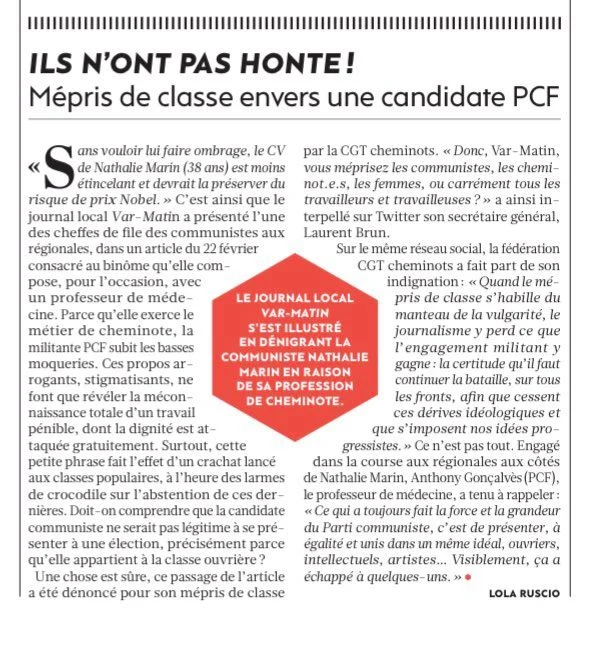

Publication d’archives
Mépris de classe d'un organe de presse à l'encontre d'une candidate PCF
Date indiquée par Facebook · 1 mars 2021
Texte conservé avec la publication
Contexte du dossier
En mars 2021, un relais de L’Humanité dénonce le mépris de classe subi par une candidate communiste. La réponse de son binôme, professeur de médecine, rappelle la place égale des ouvriers, intellectuels et artistes dans le même idéal. Le nom de la candidate et le détail de l’attaque ne figurent pas dans le texte transmis : on n’en invente pas.
En avril, la page soutient une liste de combat en Nouvelle-Aquitaine face à Alain Rousset, qu’elle qualifie de macroniste. L’appel du 18 juin explicite l’enjeu des élections des 20 et 27 : transports, lycées, action sociale, collèges, santé de proximité, protection des ressources. Il invite à voter « On est là ! » aux régionales et « Il est temps ! » aux départementales. L’élection y est rendue à ses effets quotidiens, loin d’une simple compétition de noms.

Sources
Archive rouge · export Facebook · AR-0002-FB-02064
À lire aussi · Septembre 2022 : le débat public ne se décrète pas d’en haut